Boss 出招中失衡、死亡，收招中短僵直
王權橫掃砍到的那一刻（完美彈返把韌性削光）
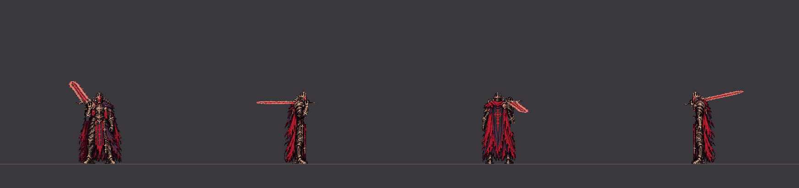
四個方向：朝下、朝右、朝上、朝左（1 倍；被打那一張多停遊戲的停頓 9 幀）墜誓下劈舉過頭頂時被打到失衡
四個方向：朝下、朝右、朝上、朝左（1 倍；被打那一張多停遊戲的停頓 9 幀）灰燼衝擊劍插在地上時被打到失衡
四個方向：朝下、朝右、朝上、朝左（1 倍；被打那一張多停遊戲的停頓 9 幀）灰燼迴旋轉到一半被打到失衡（順著轉完再插劍）
四個方向：朝下、朝右、朝上、朝左（1 倍；被打那一張多停遊戲的停頓 9 幀）墜王之躍落地砸拳後被打到失衡（劍在背上：先拔劍）
四個方向：朝下、朝右、朝上、朝左（1 倍；被打那一張多停遊戲的停頓 9 幀）裁決突刺被彈開時被追打到失衡
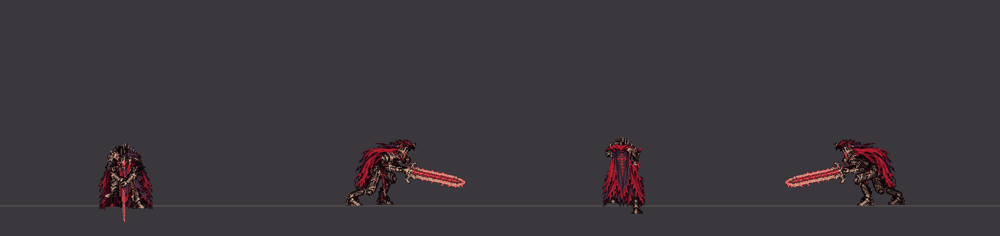
四個方向：朝下、朝右、朝上、朝左（1 倍；被打那一張多停遊戲的停頓 9 幀）上挑蓄力時被打死（跪下、再往前垂）
四個方向：朝下、朝右、朝上、朝左（1 倍；被打那一張多停遊戲的停頓 9 幀）王權橫掃收招時被重擊打到短僵直（0.3 秒，回到扛劍站著）
四個方向：朝下、朝右、朝上、朝左（1 倍；被打那一張多停遊戲的停頓 6 幀）灰燼迴旋收招時被打到短僵直
四個方向：朝下、朝右、朝上、朝左（1 倍；被打那一張多停遊戲的停頓 6 幀）每一招的每個起點（灰底＝被打斷時的那一張；接著銜接；跪下的話最後是 boss_kneel_down 的接下來幾張）
boss_c1_bounce_break

boss_c1_break

boss_c1_stagger
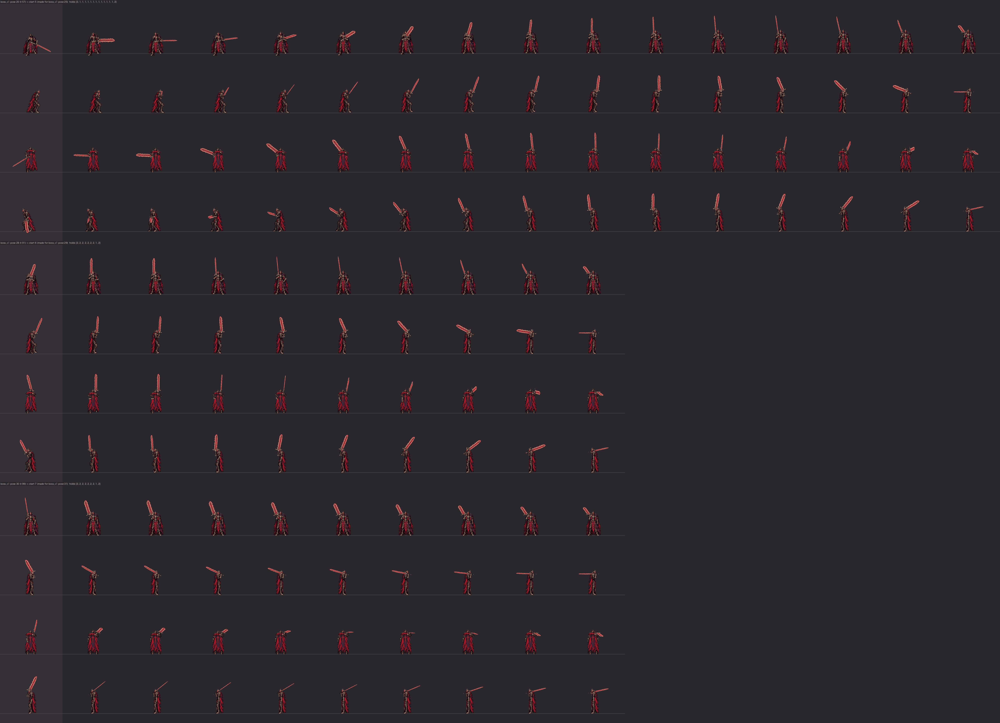
boss_cleave_bounce_break

boss_cleave_break

boss_cleave_stagger
boss_double_impact_break

boss_double_impact_stagger
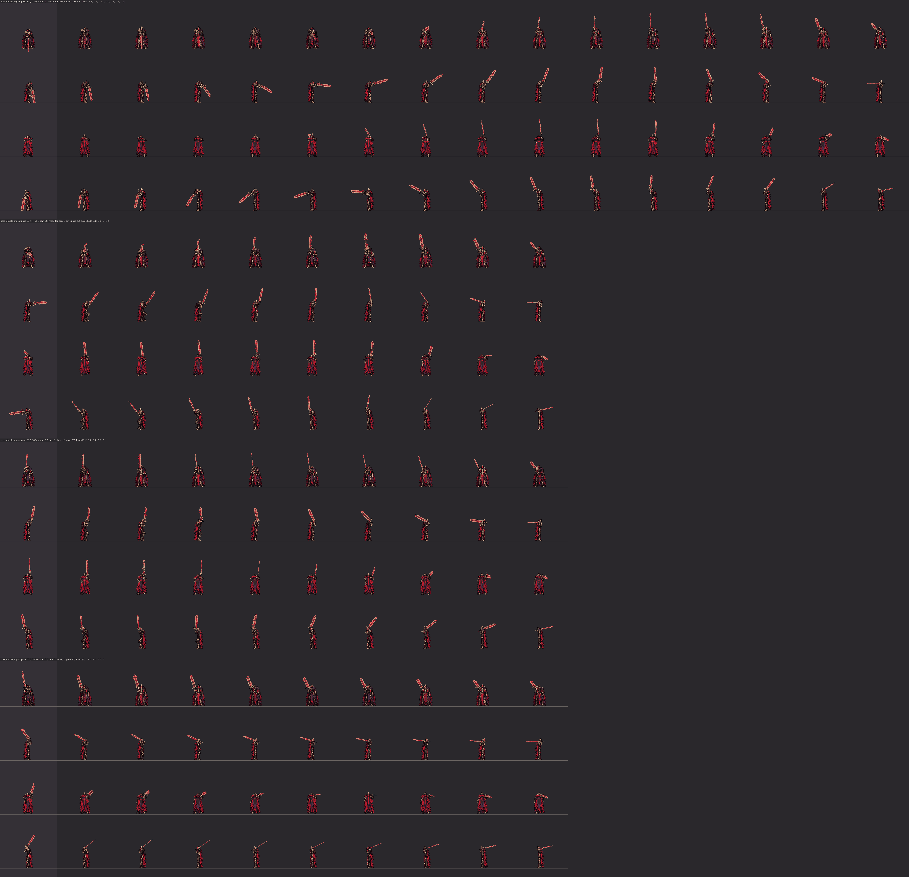
boss_impact_break

boss_impact_stagger
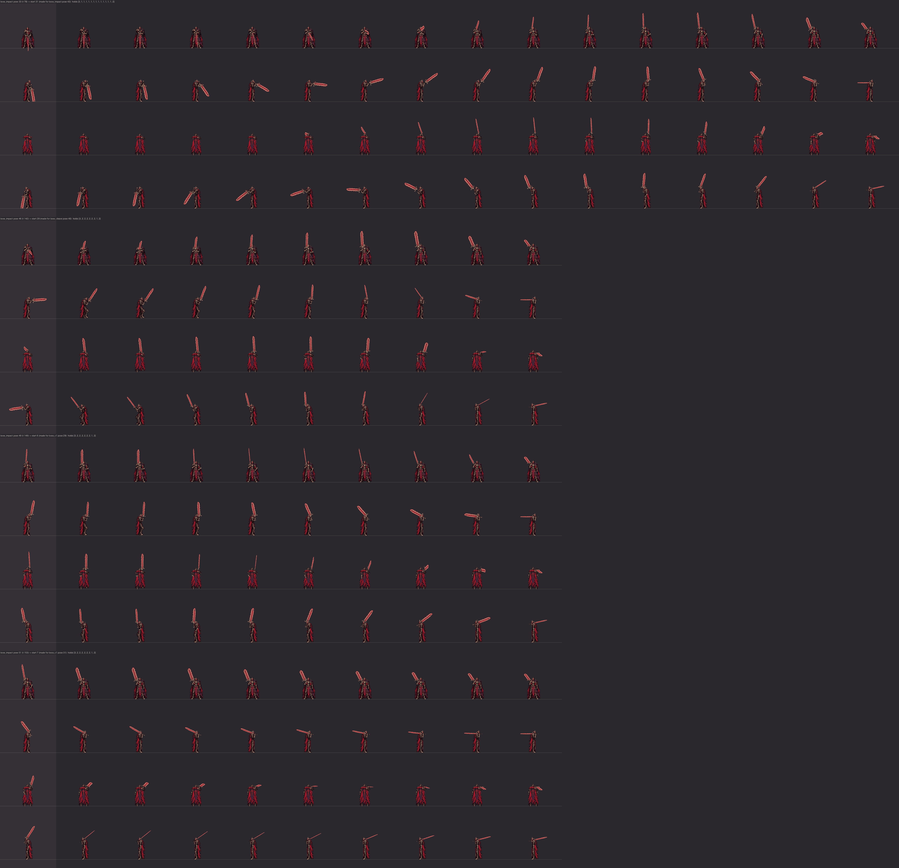
boss_leap_bounce_break

boss_leap_break

boss_leap_stagger
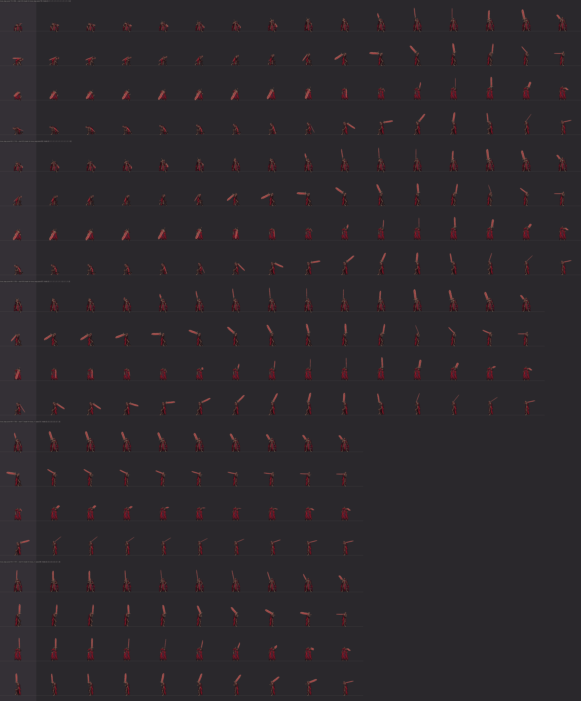
boss_quick3_bounce_break

boss_quick3_break

boss_quick3_stagger
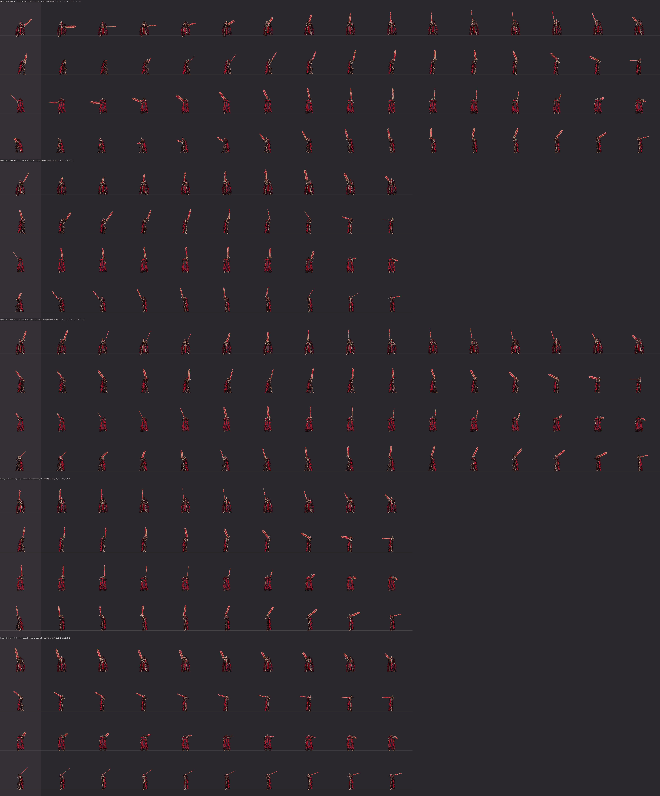
boss_quick_bounce_break

boss_quick_break

boss_quick_stagger
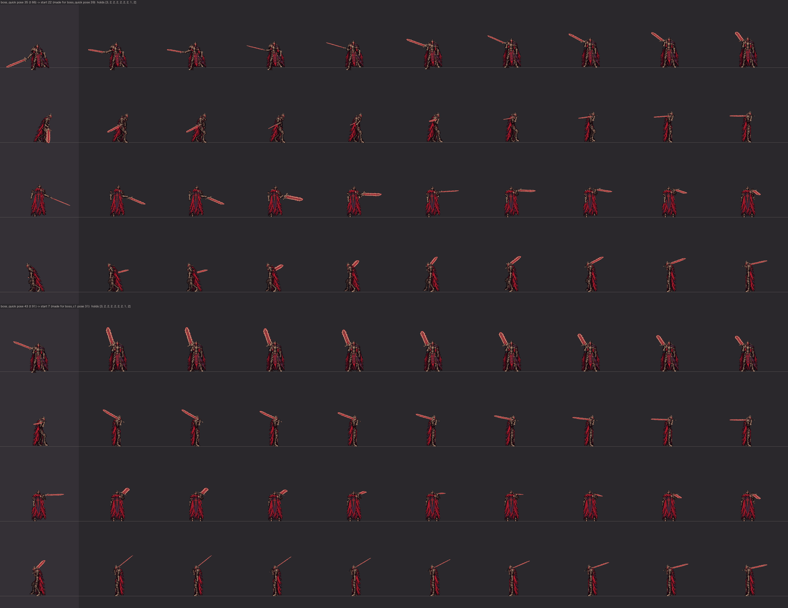
boss_spin_bounce_break

boss_spin_break

boss_spin_stagger

boss_thrust_bounce_break

boss_thrust_break

boss_thrust_stagger
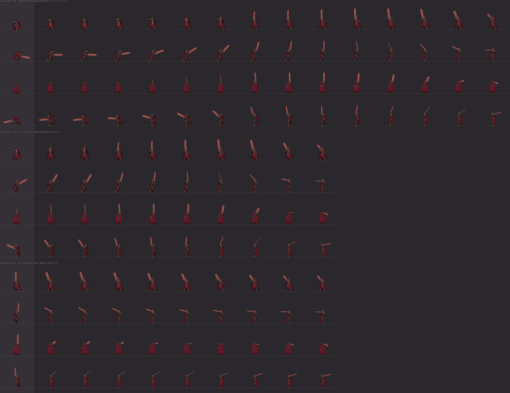
boss_triple_break

boss_triple_stagger
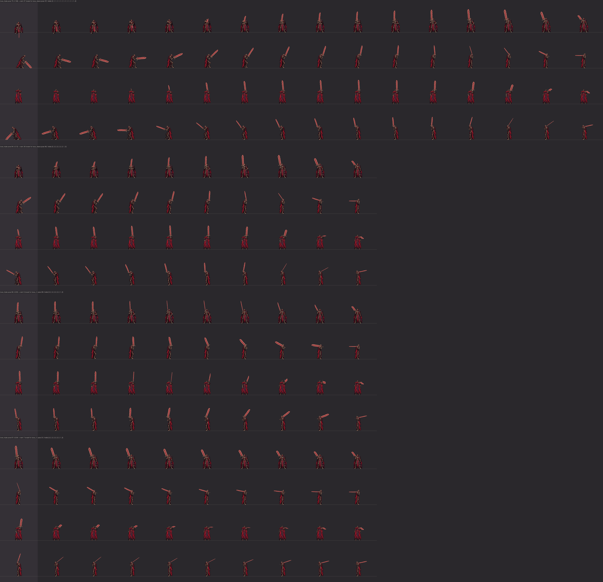
boss_twin_bounce_break
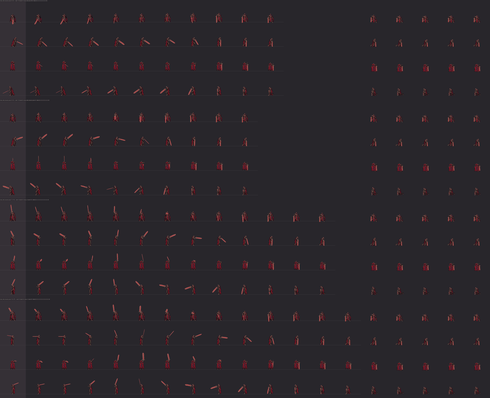
boss_twin_break

boss_twin_stagger
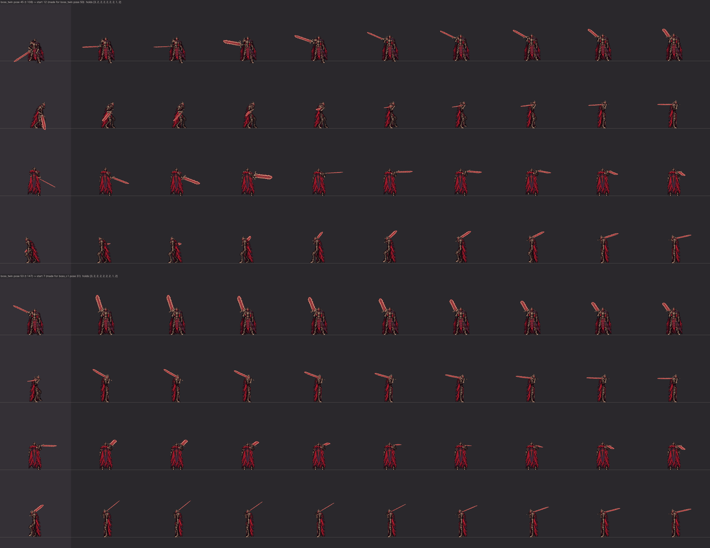